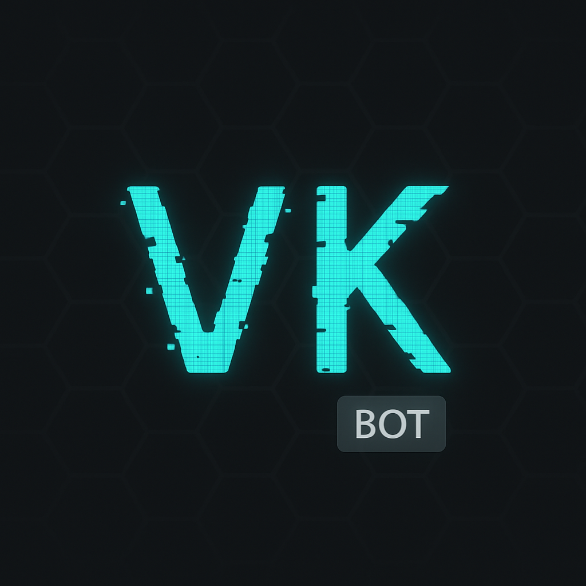

What is VK ?
That's not important, but it kinda shaped my path.
So it started as a username for a game.
In this game I wanted to create a faction but I needed a Discord server for the faction to communicate on.
I didn't know there were chat bots that I could download or add to my server, so I tried to create my own.

The Discord bot.
I created it but I can't really publish it..., actually I can but I'm not going to pay money.
So I basically did it but I don't really know if it works,...like..., if it would follow commands, because you can't do alot of testing when it's not published.
Although it's not published I did it, but I had some help obviously by The Scaffold but we'll get into that later.
That's when my interest for coding manifested, actually technically the interest manifested a long time ago while watching movies but I never trusted that feeling because movies have a way of painting things in a fantasy like way.
VK Architect
I found out the VK ursename was already taken, so I kept the VK abbreviation and added words after it.
The first one was VK Architect.
The VK Architect
Why VK Architect
Well before I decided to learn coding I wanted to be a pilot.
That didn't work out as planned, because my marks didn't allow for me to get a bursary and flights school is very expensive more than 1mil.
I was lost didn't know what to do, but then I was reminded of coding.
Now I chose coding because I discovered that I could become a
self-taught web developer.
I tried it to see if my interest would fade.
You know what?
It didn't .
Even though it can be one of the most irritating things in my life
especially since I’m pursuing it on a phone it’s still something I care about.
Maybe not more irritating than Clash Royale, but it’s definitely up there.
The Scaffold
I would like to take the credit and say that I’m doing everything on my own, but I can’t.
No one builds something meaningful alone, and I’ve had help from my trusted Scaffold.
Just like every builder needs a Scaffold while constructing a building,
I also need my Scaffold while I’m still in the early stages of building my future.